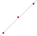

HFit - fitting algorithms in Haskell
HFit - fitting algorithms in Haskell
It's very interesting class of tasks - fitting of some figure using several input points with noise. The simplest method is Least Squares Algorithm.

Idea of algorithm is to find a and b of line equation a*x + b using
sum's minimization of difference's squares: ∑(y<sub>i</sub> -
(a*x<sub>i</sub> + b))<sup>2</sup>. Result is 2 formulas:
\[ a=\frac{n \sum\limits_{i=1}^n x_i y_i - \sum\limits_{i=1}^n x_i \sum\limits_{i=1}^n y_i} {n \sum\limits_{i=1}^n x_i^2 - ({\sum\limits_{i=1}^n x_i})^2} \]
<br>
\[ b=\frac{\sum\limits_{i=1}^n y_i - a \sum\limits_{i=1}^n x_i} {n} \]
<br>
And when we know a and b we can generates (x0, y0) (x1, y1) points to
create line…
Application initializes Tcl/Tk UI via sending Tcl code to wish interpreter:
...
mainTcl <- readFile "ui.tcl"
(Just si, Just so, Just sx, ph) <- createProcess (proc wish []) {
std_in=CreatePipe, std_out=CreatePipe, std_err=CreatePipe, close_fds=False}
hSetBuffering si NoBuffering
hSetBuffering so NoBuffering
hPutStrLn si mainTcl
...
Communication loop lives in separate process:
...
forkIO $ ioLoop si so
waitForProcess ph
putStrLn "bye."
where
ioLoop si so = forever $ do
resp <- (hGetLine so) `catchIOError` (\_ -> return "eof")
case resp of
"eof" -> exitSuccess
_|resp `startsWith` "calc " ->
putStrLn ("-> " ++ resp) >>
let res = calc resp in
putStrLn ("<- " ++ res) >> hPutStrLn si res
_ -> putStrLn resp >> return ()
...
and when new line is got from wish then it will be processed with calc
function which gets request (here it's call resp from Wish, yep:) and parse
coordinates like "1 2 3 4", ie. x0 y0 x1 y1 ... xn yn with parsePt (after
splitting them into words):
... -- Parse ["12", "34", "56", "78"] to [(12, 34), (56, 78)] parsePt :: [String] -> [Pt] parsePt [] = [] parsePt (k:v:t) = (read k, read v) : parsePt t ...
then done all calculation in Double domain. Result of calculation is Tcl
command like "takeCalc x0 y0 x1 y1" with coordinates of found line 2 points:
-> calc 119 285 194 235 379 64
<- takeCalc 119 306 379 46
Wish will get this command and create line on canvas.
Actually it's initial state, so needs many improvement, adding new algorithms, etc…